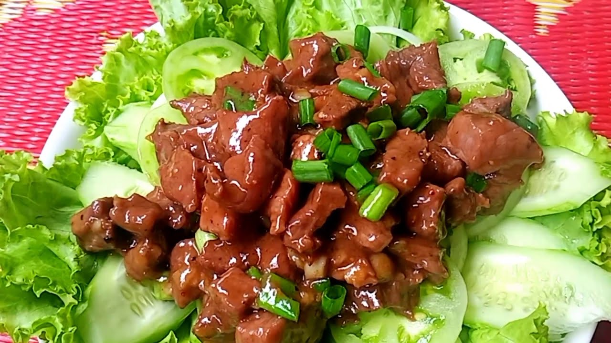
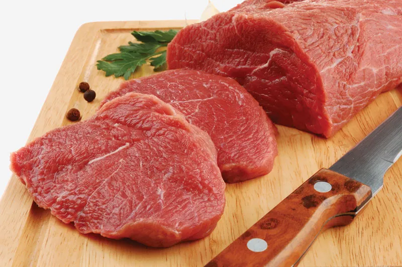
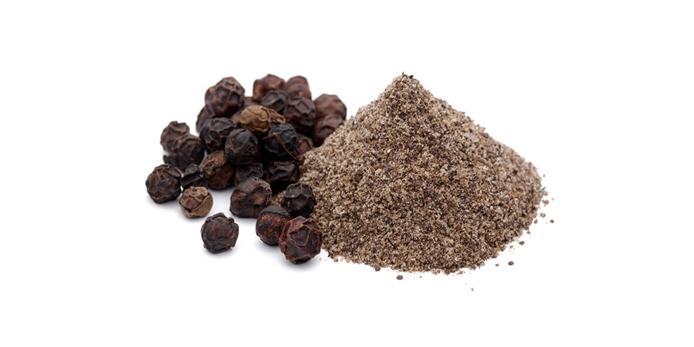

Beef Lok Lak
ឡុកឡាក់សាច់គោ
Beef Lok Lak is a famous Cambodian dish made with marinated beef stir-fried at high heat and served on a bed of fresh vegetables. It is known for its rich, savory flavor and is traditionally paired with a lime and black pepper dipping sauce, rice, and a fried egg.

Ingredients
Beef (Sirloin or Tenderloin)

300g
Buy NowGarlic
4 cloves
Buy NowSoy Sauce
1 tbsp
Buy NowOyster Sauce
1 tbsp
Buy NowFish Sauce

1 tsp
Buy NowSugar

1 tsp
Buy NowBlack Pepper

1 tsp
Buy NowLettuce
For serving
Buy NowCucumber
For serving
Buy NowTomato
For serving
Buy NowRice
2 cups
Buy NowFried Egg (Optional)
1 egg
Buy NowLemon(for dipping sauce)
1 piece
Buy NowRecipe
-
Step 1: Marinate the beef
- Mix soy sauce, oyster sauce, fish sauce, sugar, garlic, and pepper
- Add beef and mix well
- Marinate for 30 minutes
-
Step 2: Cook the beef
- Heat oil in a pan or wok
- Add beef and stir-fry on high heat
- Cook until browned but still tender
-
Step 3: Prepare vegetables
- Slice tomato and cucumber
- Wash lettuce
-
Step 4: Make dipping sauce
- Mix lime juice, salt, and black pepper
-
Step 5: Serve
- Place vegetables on plate
- Add beef on top
- Serve with rice and dipping sauce
- Add fried egg (optional)